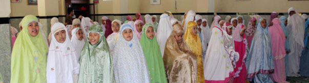
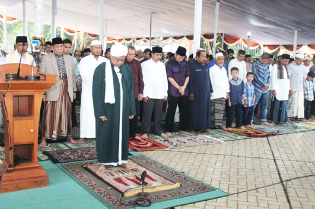

Cuaca Cerah di Kota Bogor, Sholat Idul Fitri Berlangsung Khusu
25 Agustus 2013

Walikota Bogor Diani Budiarto, bersama Plt Sekretaris Daerah Kota Bogor Ade Syarif Hidayat, para Asisten dan Pimpinan SKPD (Satuan Kerja Pemerintah Daerah) Kota Bogor menunaikan shalat Idul Fitri di Plaza Balaikota Bogor. Nampak hadir dalam Sholat Idul Fitri di Plaza Balaikota Bogor anggota DPR RI dari Fraksi Demokrat Max Sopacua, dan Ketua MUI Kota Bogor H. Adam Ibrahim.
Meski Kamis pagi cuaca Kota Bogor cukup cerah. Namun Plaza Balaikota Bogor yang digunakan sebagai tempat Sholat Idul Fitri dipasangi tenda besar oleh Bagian Umum Sekretariat Daerah Kota Bogor, guna mengantisipasi turunnya hujan, seperti yang terjadi pada malam menjelang takbiran.
Pelaksanaan sholat Idul Fitri di Plaza Balaikota Bogor dimulai tepat pukul 07.00 wib Bertindak sebagai Imam dan Khatib Dr. KH. Abdullah Makky Imam besar Masjid Istana Kepresidenan RI.
Seusai sholat Idul Fitri Walikota Bogor Diani Budiarto berharap bahwa apa yang dilakukan selama bulan Ramadhan agar terus dipertahankan. “ Saya ingin mengajak kepada seluruh warga Kota Bogor untuk terus berbuat kebaikan dan kemaslahatan, “ ajak Diani.
Terkait dengan banyaknya persoalan dan permasalahan yang dihadapi, Diani mengatakan, bahwa sepanjang permasalahan dan problematikanya bisa disikapi secara bersama-bersama tidak akan sulit untuk diatasi dan ditemukan solusinya.
Sementara itu dalam khutbahnya Dr. KH. Abdullah Makky menguraikan secara panjang lebar mengenai makna Idul Fitri secara hakikat. Menurut Abdullah, pertama makna Idul Fitri embali kepada fitrah seperti bayi lahir dari ibu kandungnya. Kedua, terbebas dari godaan – godaan setan. Dia tidak tergelincir apapun baik perkataannya, maupun pikiran dan perbuatannya. “ Jadi itulah manusia yang mendapat kemenangan, “ kata Abdullah.

Yang ketiga, dia yang akan bisa melintasi jembatan shiorothol mustaqim, dan langsung masuk ke dalam surga. Ke empat, pada suatu hari dia akan masuk dalam surga dan akan terhidar dari neraka Jahim yakni neraka yang sangat pedih dan kejam. Sedangkan hakikat Idul Fitri yang kelima, dia pada suatu hari nanti akan berjumpa dengan Allah SWT.
Seusai sholat Idul Fitri jamaah yang hadir secara bergiliran mengantri saling bersalam –salaman. Setelah acara di Balaikota Walikota Diani Budiarto, menjenguk mantan Walikota Bogor Eddy Gunardi yang sedang terbaring sakit di kediamannya Villa Indah Pajajaran Kecamatan Bogor Utara.
Selanjutnya walikota menjamu masyarakat dan penyapu jalan yang biasa bertugas sekitar jalan Pajajaran, dan Jalan Ir. H. Juanda sekitar Balaikota di Rumah Dinasnya Jalan Pajajaran